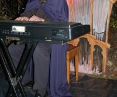

Back for another year, every night, the Sunny Acres
Corn Maze becomes the Sunny Acres Haunted
Maze This season's maze begins with an encounter
with an evil organist (played by the Council Bluff
Choir's own Glenn Frye). Explore the maze and find
the zombie graveyard, the pumpkin tower, and a
haunted house made of corn, not to mention the
spiders, ghosts, witches, and other assorted villainy
that inhabit the maze.
The Haunted Maze is open the last three weekends
of October with a special event on Halloween. Come
early in the day to explore the larger Corn Maze,
building it! Our family would like to invite your family
to come out and visit us at this year's Corn Maze
stay for a homemade meal of brats and burgers,
soda, and chips, and then participate in the
Halloween Festival. Special stations will be set up in
the Haunted Maze for trick-or-treaters. A smaller
maze is also available that is "scare-friendly" for
younger children
re scattered throughout.
.
Hours
- Open 5 pm - 9 pm on October 14, 15, 21, 22, 28, and 29
- Halloween Festival October 31 from 3 pm - 9 pm
Admission
- Age 12 and Over: $8.50
- Age 6 - 11: $6.50
- Under 6: $2.50
Sunny Acres ☀ Tammy & Brent Nielsen ☀ 1977 HIGHWAY G ☀ COUNCIL BLUFFS, IA 51503